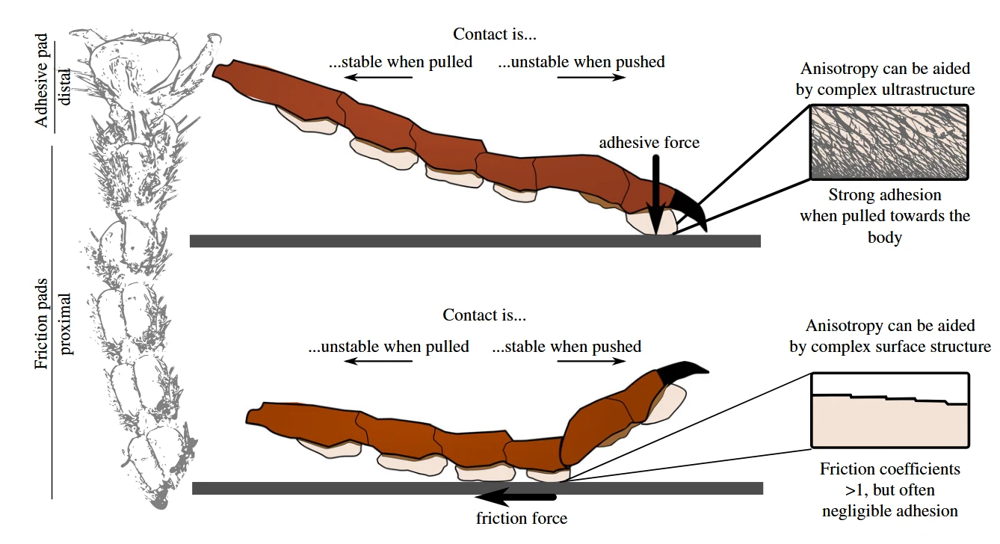

本文目录 · 7 节
一句话精要：动态生物黏附依靠机械调节快速开关：向身体拉动足垫通常增强附着，反向推动或改变剥离几何有利于释放。接触面积、界面强度和弹性应变能共同参与，不能只归因于“粘得更牢”。
{kind=link}

放大查看 ↗· 论文事实、项目启发与待验证事项分开记录。
机制 / 结构如何把动作变成附着
综述中的剪切敏感性表现为法向附着随切向加载增强。对已研究的多种动物，附着约为剪切力一半是经验概括，并不是适用于所有人工材料、所有速度和所有预载的设计定律。正文也指出，单一剥离模型尚不能解释全部小角度实验结果。
在忽略伸长的理想胶带模型中，F(1 − cos φ) = bG：F 为沿胶带方向的拉力，φ 为相对基底的剥离角，b 为宽度，G 为单位新生界面的能量。固定 b、G 时，小角度对应更大的所需拉力；不能写成“小角度更容易脱附”，也不能将该式误写为指数规律。真实软足垫的伸长、预应变和滑移会修正这一关系。
项目启发 / 哪些值得迁移
设计目标是承重时维持合适剪切与接触形态，释放时卸载并让边缘形成可控剥离前沿。剥离能降低所需峰值力，却不等于机械功为零；驱动器、弹性储能和界面耗散需要分别衡量。
证据 / 参数与测试条件
| 项目 | 原文或精读记录 | 条件与解释 |
|---|---|---|
| 剪切敏感性 | 法向附着受切向加载调控 | 同时涉及接触面积和单位面积强度 |
| 经验比值 | FA ≈ 0.5 FS | 原文动物数据概括；不是人工足垫通用常数 |
| 理想剥离模型 | F(1 − cos φ) = bG | 忽略胶带伸长，φ 相对基底 |
| 可控释放 | 卸剪切、改变角度、释放应变能 | 要同时记录峰值力与释放路径 |
实验 / 转化为可检查的问题
以下为结合阅读提出的实验建议，尚不代表本项目已完成：
- 固定试样、预载、速度，比较多个剥离角，记录力—位移曲线；区分总拉力与法向分量。
- 比较整体拉脱、边缘剥离与分区剥离，观察是否损伤材料、是否可重复恢复。
边界 / 这些结论不能直接外推
生物经验不是材料选型公式。微刺也可表现方向依赖，但其机械互锁不应与干黏附的分子接触或湿黏附机制混为一谈。
关联阅读 / 沿问题继续读
- Hawkes2015 — 把方向性变为可测的承载/摆动阻力与机器人步态。
- Yu2024 — 利用卷曲壳改变接触面积和剥离路径。
- Liu2026 — 通过贴片分区与柔顺支撑管理裂纹与应力。
论文关联地图 · 当前项目记录：光滑面方案仍在筛选，历史干黏附构想不等于已定型方案。
来源 / 阅读记录与原文
整理依据：myvault：Federle & Labonte 2019 - 摘要、剪切敏感黏附、剥离力学；按原文 Fig. 2–3 校正剥离角度说明。